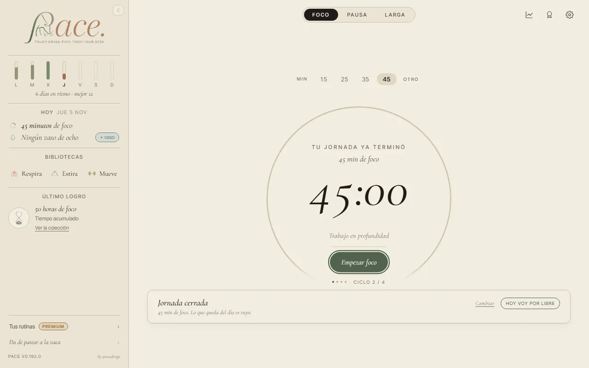
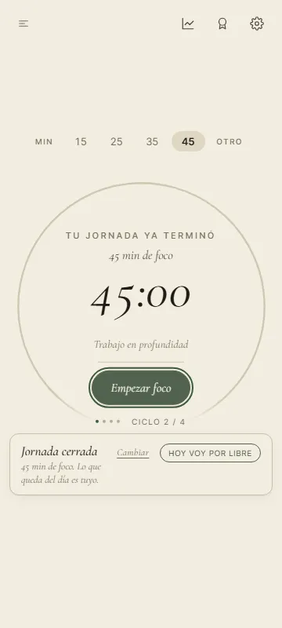
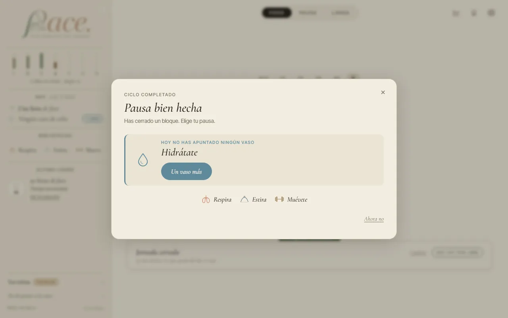
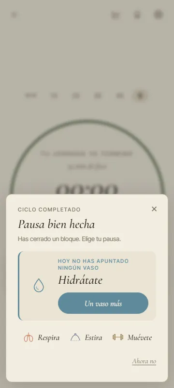
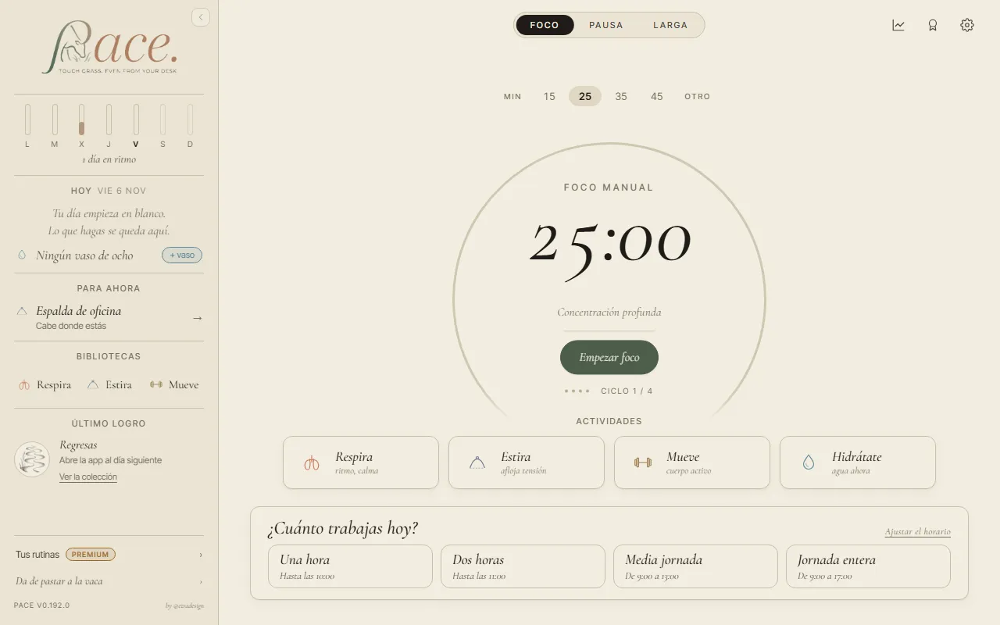
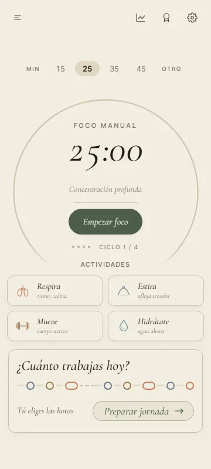

<title>Recorrido del 6 de noviembre</title>
<meta name="claude:viewport-fit-sides" content="cover">
<link rel="stylesheet" href="https://fonts.googleapis.com/css2?family=Cormorant+Garamond:ital,wght@0,500;1,500;1,600&family=Inter+Tight:wght@400;500;600&display=swap">
<style>
/* Una columna de lectura, como un cuaderno: cada cosa que elegiste con su antes y su después. Los
   colores y la letra son los de PACE (DESIGN_SYSTEM.md). */
:root {
  --papel: #F2EDE0; --papel-2: #EAE4D4; --tinta: #1F1C17; --tinta-2: #4A453C; --tinta-3: #77705F;
  --linea: #C9C0A8; --oliva: #3E5A3A; --terracota: #A85E43; --elegida: rgba(62,90,58,0.10);
  --display: "Cormorant Garamond", "EB Garamond", Georgia, serif;
  --ui: "Inter Tight", "Segoe UI", system-ui, sans-serif;
}
@media (prefers-color-scheme: dark) { :root:not([data-theme="light"]) {
  --papel: #1C1A16; --papel-2: #26231D; --tinta: #EDE6D6; --tinta-2: #C9C0AC; --tinta-3: #A39A86;
  --linea: #3E3A31; --oliva: #9DB894; --terracota: #E0A285; --elegida: rgba(157,184,148,0.14); color-scheme: dark } }
:root[data-theme="dark"] {
  --papel: #1C1A16; --papel-2: #26231D; --tinta: #EDE6D6; --tinta-2: #C9C0AC; --tinta-3: #A39A86;
  --linea: #3E3A31; --oliva: #9DB894; --terracota: #E0A285; --elegida: rgba(157,184,148,0.14); color-scheme: dark }
body { background: var(--papel); color: var(--tinta); font: 16px/1.55 var(--ui); }
.hoja { max-width: 760px; margin: 0 auto; padding-block: 40px 64px;
  padding-left: max(16px, env(safe-area-inset-left, 0px)); padding-right: max(16px, env(safe-area-inset-right, 0px));
  display: grid; gap: 40px; }
h1, h2 { font-family: var(--display); font-style: italic; font-weight: 500; text-wrap: balance; margin: 0; }
h1 { font-size: 2.4rem; line-height: 1.1; }
h2 { font-size: 1.7rem; line-height: 1.2; }
.ceja { font-size: .74rem; letter-spacing: .14em; text-transform: uppercase; color: var(--tinta-3); margin: 0 0 6px; }
p { margin: 0; max-width: 65ch; }
.intro { display: grid; gap: 12px; color: var(--tinta-2); }
.pregunta { display: grid; gap: 14px; padding-top: 28px; border-top: 1px solid var(--linea); }
.pregunta > * { min-width: 0; }
.fotos { display: grid; grid-template-columns: repeat(auto-fit, minmax(240px, 1fr)); gap: 12px; align-items: start; }
.fotos.con-movil { grid-template-columns: minmax(0, 2.6fr) minmax(0, 1fr); }
@media (max-width: 560px) { .fotos.con-movil { grid-template-columns: 1fr; } }
figure { margin: 0; display: grid; gap: 6px; }
figure img { width: 100%; border: 1px solid var(--linea); border-radius: 6px; display: block; }
figcaption { font-size: .85rem; color: var(--tinta-3); }
.elegida { display: grid; grid-template-columns: auto 1fr; gap: 12px; align-items: start; padding: 12px 14px;
  border: 1px solid var(--oliva); border-radius: 8px; background: var(--elegida); }
.elegida b { font-family: var(--display); font-size: 1.2rem; font-style: italic; }
.antes { color: var(--tinta-2); }
.antes summary { cursor: pointer; font-size: .9rem; color: var(--tinta-3); }
.antes[open] summary { margin-bottom: 10px; }
.nota { padding: 12px 14px; border-left: 3px solid var(--terracota); background: var(--papel-2); border-radius: 0 8px 8px 0; display: grid; gap: 8px; }
.nota b { font-weight: 600; }
.hecho li { margin-bottom: 8px; }
ul { margin: 0; padding-left: 20px; max-width: 65ch; }
details summary:focus-visible { outline: 2px solid var(--oliva); outline-offset: 2px; }
</style>

<main class="hoja">
  <header class="intro">
    <p class="ceja">PACE · recorrido del 6 nov. · lo que elegiste el 7 nov.</p>
    <h1>Lo que elegiste, ya montado</h1>
    <p>Elegiste <b>1A 2A 3A 4C 5A</b>. Así queda, en el portátil (1280 px) y en el móvil (360 px). Cada cambio lleva su prueba, que sale en rojo si se quita el arreglo.</p>
    <p>Está en la rama del recorrido. Cuando digas «júntalo», la coordinadora lo sube con lo demás.</p>
  </header>

  <section class="pregunta" id="p1">
    <p class="ceja">1 · Volver tarde a una jornada</p>
    <h2>Pasada la salida, el día se cierra</h2>
    <div class="elegida"><b>A</b><span>El aro dice «Tu jornada ya terminó» con lo que hiciste, y si quieres sigues por libre.</span></div>
    <p>Empiezas la jornada por la mañana, haces el primer bloque, cierras la ventana de la pausa y vuelves a las 17:40 (tu salida era a las 17:00). Ahora el aro dice «Tu jornada ya terminó · 45 min de foco», la tarjeta, «Jornada cerrada», y el botón es «Empezar foco», el de por libre. Si un bloque empezó antes de la salida, se acaba y te ofrece su pausa de cierre. Con la página abierta, la home se entera sola, sin que toques nada.</p>
    <div class="fotos con-movil">
      <figure><figcaption>Ahora, a las 17:40, en el portátil</figcaption></figure>
      <figure><figcaption>En el móvil</figcaption></figure>
    </div>
    <details class="antes">
      <summary>Antes</summary>
      <div class="fotos">
        <figure><figcaption>A las 17:40 decía «Bloque 2 de 9 · Hasta las 17:00»</figcaption></figure>
        <figure><figcaption>Y al pulsar, un bloque hasta las 18:30</figcaption></figure>
      </div>
    </details>
    <div class="nota">
      <p><b>Una cosa que he decidido yo, por si no te convence.</b> «Una hora» y «Dos horas» también se cierran: a su hora, contada desde que empezaste. Si empiezas «Una hora» a las 17:20, a las 18:20 se acaba aunque solo hayas hecho un bloque. Así contaba ya el día la app (el final no se movía al empezar tarde un bloque); ahora, además, se cierra. Si prefieres que esas dos sigan hasta tu salida, dímelo.</p>
    </div>
  </section>

  <section class="pregunta" id="p2">
    <p class="ceja">2 · Un Foco más cuando el día ya acabó</p>
    <h2>El Foco por libre acaba con la ventana de siempre</h2>
    <div class="elegida"><b>A</b><span>La pausa de cierre cuenta como saltada en cuanto empiezas otra cosa.</span></div>
    <p>Media jornada elegida a las 12:00, su bloque hecho y, después, un Foco por libre: al acabar, la ventana dice «Ciclo completado» y ya no vuelve a proponer la pausa de cierre ni dice «Bloque 1 de 1».</p>
    <div class="fotos con-movil">
      <figure><figcaption>Ahora, tras el Foco libre</figcaption></figure>
      <figure><figcaption>En el móvil</figcaption></figure>
    </div>
    <details class="antes">
      <summary>Antes</summary>
      <div class="fotos">
        <figure><figcaption>Repetía «Bloque 1 de 1 · hecho» y la pausa de cierre</figcaption></figure>
      </div>
    </details>
  </section>

  <section class="pregunta" id="p3">
    <p class="ceja">3 · La ventana que se queda abierta</p>
    <h2>Por la mañana, la home del día nuevo</h2>
    <div class="elegida"><b>A</b><span>Al cambiar de día, la ventana de ayer se cierra sola.</span></div>
    <p>Acabas un Foco a las 18:25 y no tocas nada. A las 8:40 del día siguiente ya no está «Ciclo completado · Elige tu pausa», sino la home del día nuevo. Si el Foco acaba pasada la medianoche, su ventana es de hoy y se queda.</p>
    <div class="fotos con-movil">
      <figure><figcaption>Ahora, a las 8:40 del día siguiente</figcaption></figure>
      <figure><figcaption>En el móvil</figcaption></figure>
    </div>
  </section>

  <section class="pregunta" id="p4">
    <p class="ceja">4 · La «× Salir» de Respira</p>
    <h2>Se queda como está</h2>
    <div class="elegida"><b>C</b><span>Sin tocar.</span></div>
  </section>

  <section class="pregunta" id="p5">
    <p class="ceja">5 · Los vasos de Hidrátate, para quien no ve la pantalla</p>
    <h2>Cada vaso con su nombre</h2>
    <div class="elegida"><b>A</b><span>«Vaso 3 de 8» y, en inglés, «Glass 3 of 8».</span></div>
    <p>El lector de pantalla ya no dice «uno, dos, tres…». No cambia nada de lo que se ve, así que no lleva foto.</p>
  </section>

  <section class="pregunta" id="encontrado">
    <p class="ceja">Al probarlo</p>
    <h2>Un fallo que salió con la 1A, ya arreglado</h2>
    <p>La noche en que se adelanta la hora (el último domingo de marzo, a las 2:00 pasan a ser las 3:00), «Una hora» empezada a la 1:20 se daba por terminada a las 3:10, a los 50 minutos de verdad: contaba la hora que no existe. Ahora cuenta con el reloj con el que empezaste. Lo vigila una prueba que ya existía y que salió en rojo.</p>
  </section>

  <section class="pregunta hecho" id="hecho">
    <p class="ceja">Ya arreglado antes, en la misma rama</p>
    <h2>Tres fallos de código, cada uno con su prueba</h2>
    <ul>
      <li><b>«chair» sin traducir</b> en tres tarjetas de Estira («Tronco sentado», «Postura reset» y «Hombros»), en castellano y en inglés. Ahora dice «con silla».</li>
      <li><b>El aviso de un sello nuevo tapaba lo que abrías.</b> Si nada más cerrar la ventana de la pausa pulsabas «Hacer la pausa», «Nuevo sello · 50 horas de foco» salía encima del título de «Antes de empezar» y del ejercicio. Tu regla del 8 de octubre, «los sellos no deben pisar los elementos», ahora también vale para lo que se abre después.</li>
      <li><b>El último bloque ofrecía «Seguir con el bloque 2»</b>, un bloque que no existe. Ahora solo ofrece la pausa y «Ahora no».</li>
    </ul>
    <details class="antes">
      <summary>Antes</summary>
      <div class="fotos">
        <figure><figcaption>«sentado · chair»</figcaption></figure>
        <figure><figcaption>El sello sobre «Empuje sencillo»</figcaption></figure>
      </div>
    </details>
  </section>
</main>
